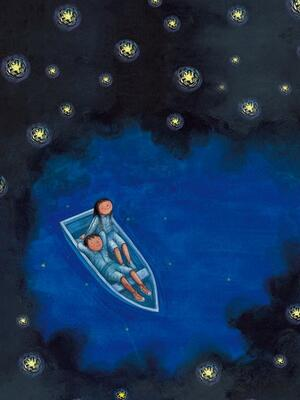
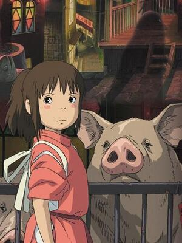

我的心中每天开出一朵花
总在快乐的时候，感到微微的惶恐。 在开怀大笑时，流下感动的泪水。 我无法相信单纯的幸福。 对人生的起伏悲喜，既坦然又不安。
一直在前进

电影大鱼海棠
人生很短，不妨大胆去爱一个人，去追一个梦。当我们循规蹈矩，遵守着世界上安定的规则，在老去的岁月，回想当初，难道就很确信当初是对的吗？

作家几米
后来许多人问我一个人夜晚踟蹰路上的心情，我想起的却不是孤单和路长，而是波澜壮阔的海和天空中闪耀的星光。因为你，我的星空又亮了。

动画宫崎骏
人生就是一列开往坟墓的列车，路途上有很多站，很难有人可以自始至终陪着走完。当陪你的人要下车时，即使不舍，也该心存感激，然后挥手道别。